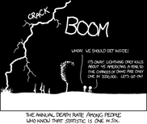

| Along with Golnoosh Farnadi, I'm co-teaching the Universite de Montreal's introductory course on data science. Stay-tuned for materials! |
| With Aidan Gomez, I co-taught a session on Attention and Memory at the 2019 Deep Learning Indaba. |
| I prepared a few lectures on Advanced Deep Learning and Humanitarian AI for the 2018 Nepal Winter School in AI. |
|
| As the instructor for Stanford's Stats 390 (Summer 2017), I prepared a cheat sheet to help statistical consultants get up to speed about methods that are widely used in applications. |
| I've organized a few short lectures on probability and statistics for middle and high school students. These are the notes I prepared. |  |